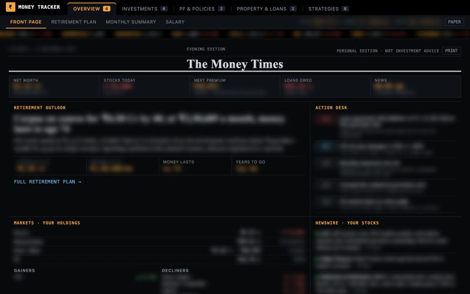

Front page
"The Money Times"
What it shows
A newspaper-style landing page. The top strip shows net worth, today's move in stocks, the next insurance premium, total loans owed and when the news last ran. The lead story is the retirement outlook: the corpus at retirement age, the monthly income it can pay and the age the money lasts to. On the right, the Action desk lists jobs taken from your own data, such as an EMI that differs from what the loan needs, an F&O lot-size change, a missing input or an unvalued property. Below are holdings by asset class, the day's gainers and decliners, and the newswire for your stocks.
How it works
Every block is computed from the same Excel files as the other tabs, so the front page is a summary, not a separate data source. Press p to print it as a newspaper.